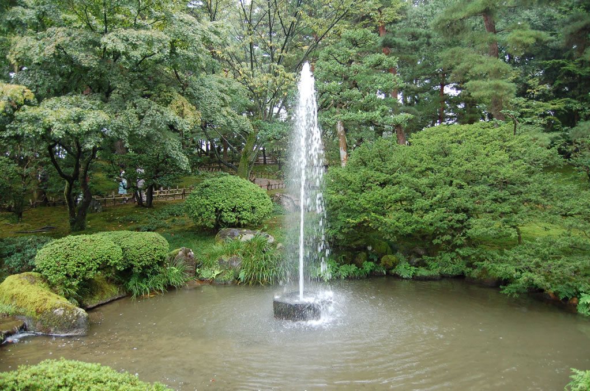
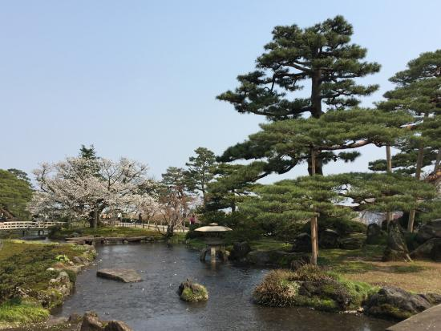
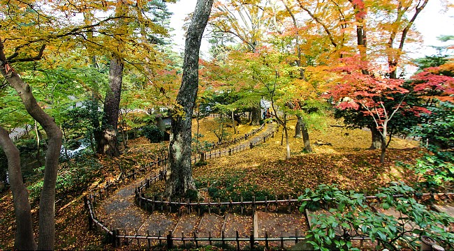

The name Kenrokuen literally means "Garden of the Six Sublimities", referring to spaciousness, seclusion, artificiality, antiquity, abundant water and broad views, which according to Chinese landscape theory are the six essential attributes that make up a perfect garden.
A fountain below Kasumigaike Pond is one of Japan's oldest, and is powered by the drop in elevation from the pond which causes water to shoot out 3.5 meters high.
The over two-meter tall Kotojitoro Lantern is uniquely built with two legs instead of one. The stone lantern is designed in the image of the Japanese koto (harp) by the pond.
What type of plant flourishes in the fall (below)?
